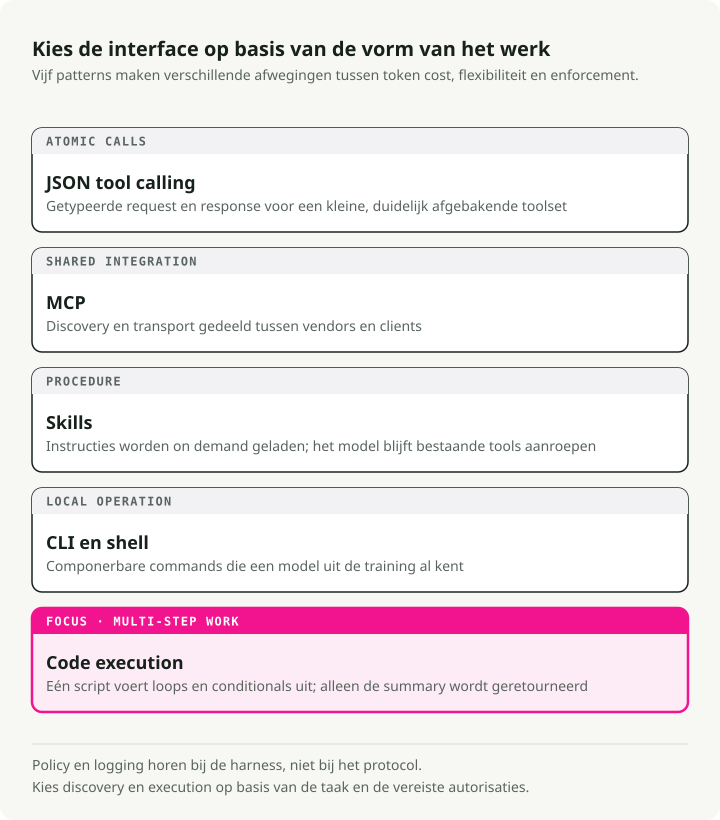
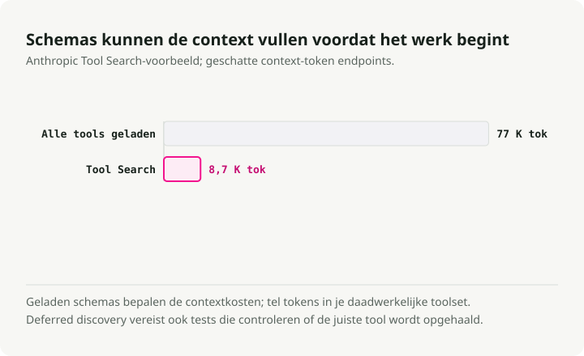
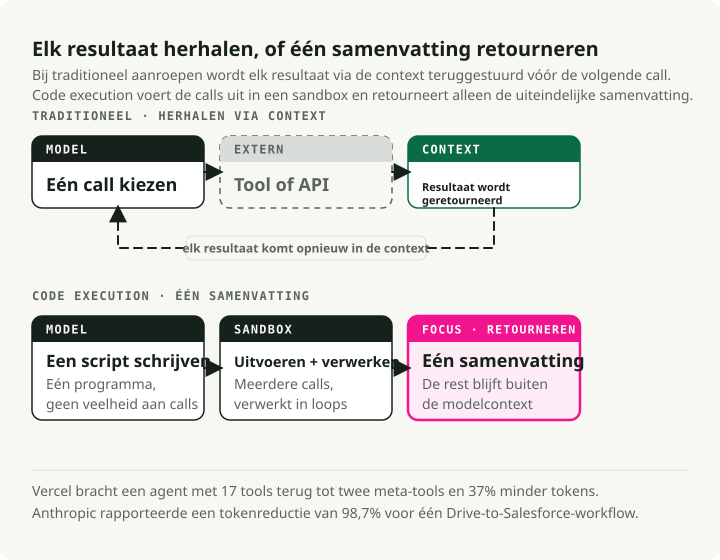
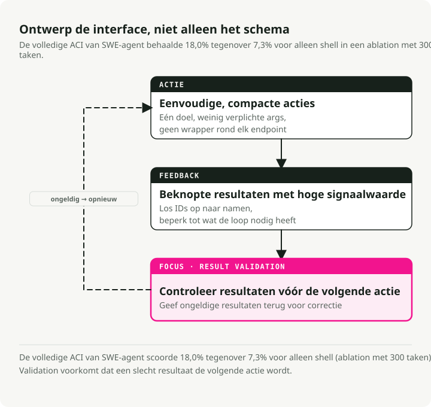

Automatische vertaling
Dit artikel is automatisch vertaald vanuit de oorspronkelijke Engelse versie.
Gebruik van tools door AI-agents in 2026: MCP, CLI, Skills en code-uitvoering
Deel 3 van de serie Engineering the Agentic Stack
Deel 1 behandelde reasoning loops, Deel 2 behandelde memory. Deze post gaat over het gebruik van tools door AI-agents: hoe agents met de wereld interageren, en waarom toolontwerp belangrijker is dan de meeste teams beseffen.
Het verhaal rond tooling veranderde in 2025–2026. MCP werd de de-facto standaard voor externe services, maar productieteams blijven aanlopen tegen de beveiligingsgaten en token-overhead ervan. De andere aanpak die aan adoptie wint, zijn agents die code schrijven en uitvoeren in plaats van JSON-gedefinieerde tools aan te roepen. Anthropic mat een reductie van 98,7% in tokens op een representatieve workflow, en het CodeAct-paper rapporteert 20% hogere task success rates.
Deze post vergelijkt JSON tool calling, MCP, Skills, CLI-tools en code-uitvoering, en koppelt die vervolgens aan Agent-Computer Interface (ACI)-ontwerpprincipes die ik toepas in de Market Analyst Agent.
TL;DR: Er zijn vijf modaliteiten waarmee AI-agents tools gebruiken, elk met een eigen sweet spot. De praktische stack voor 2026: Skills voor expertise, CLI als standaard, MCP voor externe services, code-uitvoering voor multi-step orchestration. ACI-ontwerpprincipes uit SWE-agent gelden voor allemaal.
Vijf manieren waarop AI-agents tools gebruiken
In Deel 1 liet ik zien hoe reasoning loops van AI-agents bepalen hoe ze denken. Toolmodaliteiten bepalen hoe ze handelen. Er bestaan nu vijf verschillende benaderingen, elk met andere trade-offs in tokenkosten, flexibiliteit en security.

1. JSON Tool Calling — De basislijn
Het oorspronkelijke patroon: je definieert toolschema's als JSON, het LLM emit structured function calls, en jouw code voert die uit. Het is goed begrepen en werkt prima voor kleine toolsets.
# Traditional tool definition — each tool consumes ~550-1,400 tokens (Apideck benchmark)
tools = [
{
"name": "get_stock_price",
"description": "Get the current stock price for a ticker symbol",
"input_schema": {
"type": "object",
"properties": {
"ticker": {"type": "string", "description": "Stock ticker (e.g., NVDA)"}
},
"required": ["ticker"]
}
}
]
Met 5-10 tools is dit prima. Het probleem is schaal: elke tooldefinitie kost 550-1.400 tokens. Bij 20 tools besteed je 15-25K tokens voordat de agent überhaupt begint met redeneren.
2. MCP — De universele standaard (met kanttekeningen)
Het Model Context Protocol is de standaard waar de meeste vendors op zijn geconvergeerd. Anthropic droeg het in december 2025 over aan de Linux Foundation onder de Agentic AI Foundation (AAIF), mede opgericht met OpenAI en Block, en ondersteund door Google, Microsoft en AWS als platinum members. OpenAI voegde MCP-support toe in zijn Responses API. Er zijn nu 10.000+ actieve MCP-servers en 97M+ maandelijkse SDK-downloads.
Waar MCP wint: cross-vendor SaaS-integratie (Figma, Notion, Salesforce), enterprise governance met audit trails, services zonder CLI-equivalenten, en omgevingen die OAuth-orchestration nodig hebben. Voor deze use cases is MCP de duidelijke keuze.
Het productieverhaal is rommeliger dan de headline-cijfers suggereren.
Het security-oppervlak is het eerste probleem. Het Vulnerable MCP Project houdt 50 kwetsbaarheden bij in MCP-servers, waarvan 13 als Critical zijn beoordeeld, aangeleverd door 32 security researchers. De aanvalsklassen omvatten prompt injection, failures in inputvalidatie, gaten in authenticatie en netwerkbeveiligingslekken. De eerste echte kwaadaardige MCP-server verscheen in september 2025: een package genaamd postmark-mcp dat elke uitgaande e-mail in BCC naar het adres van een aanvaller stuurde, met impact op naar schatting 300–500 organisaties vóór ontdekking.
Tool poisoning is de aanvalsklasse waar ik me het meest zorgen over maak. Invariant Labs liet zien dat gepoisonde MCP-tools data kunnen exfiltreren zelfs wanneer ze nooit worden aangeroepen. Alleen al het lezen van de metadata van de tool door het model is genoeg om de aanval te triggeren. MCPTox-benchmarks, die 20 LLM-agents tegen 45 echte MCP-servers testten, vonden attack success rates tot 72,8%.
Token-overhead is het operationele probleem. Een team dat MCP-servers draaide voor GitHub, Slack en Sentry (~40 tools totaal) ontdekte dat 55.000 tokens aan schemadefinities werden geïnjecteerd voordat een gebruiker iets vraagt. Een ander rapporteerde dat 143.000 van 200.000 beschikbare tokens (72%) alleen al door tooldefinities werden opgeslokt.

De mitigaties werken, maar bevestigen het onderliggende probleem. Anthropic's Tool Search Tool reduceert schema-overhead met 85%. Dynamisch tools laden (3-5 relevante tools per taak) bereikt een reductie van 96%. Dit zijn workarounds voor een protocol dat niet is ontworpen met tokenbudgetten in gedachten.
3. Skills (SKILL.md) — Expertise, geen uitvoering
Eind 2025 bracht de standaardisatie van agent skills als open formaat (gelanceerd in oktober 2025, gepubliceerd als open standaard in december 2025). Het onderscheid is belangrijk: tools bieden capabilities (wat agents kunnen doen), en skills bieden expertise (wat agents weten over hoe complexe taken moeten worden uitgevoerd).
De standaard SKILL.md definieert een skill als een markdownbestand met YAML frontmatter:
---
name: deploy
description: Deploy the application to production
argument-hint: "[environment]"
user-invocable: true
---
Deploy the application to the $0 environment (default: staging).
Steps:
1. Run the test suite
2. Build the production bundle
3. Deploy using the deploy script
4. Verify the deployment health check
Skills gebruiken progressive disclosure: alleen de metadata (~100 tokens voor de YAML frontmatter) wordt bij startup geladen, en de volledige instructies worden geladen wanneer de skill wordt geactiveerd. Vergelijk dat met MCP, waar ~40 tools over typische services ~55.000 tokens verbruiken voordat er ook maar enig redeneren begint. Cross-platform adoptie per maart 2026 omvat Claude Code, OpenAI Codex CLI, Cursor, GitHub Copilot, Gemini CLI, Goose, Windsurf en Roo Code, een trend die Victor Dibia verkende in zijn analyse van de verschuiving van tools terug naar codegedreven agentacties.
Wanneer skills winnen: overdracht van domeinexpertise, complexe multi-step procedures, terugkerende workflows zoals databasemigraties of payment integrations, en elke taak waarbij de agent moet weten hoe in plaats van alleen wat.
4. CLI/Bash — De Unix-renaissance
De Unix-terminal bleek de meest token-efficiënte interface voor agents te zijn. De rekensom is eenzijdig: een CLI-toolmanifest kost ongeveer 100 tokens, terwijl equivalente MCP-serverschema's 50.000+ tokens verbruiken. Dat is een 4-32x verschil gemeten door Scalekit over 75 benchmark-runs (32x voor taken zoals repo language en license lookup).
Modellen zijn native CLI-sprekers. Hun trainingsdata bevat miljarden terminalinteracties uit Stack Overflow, GitHub-repo's en documentatie. Ze begrijpen git, docker, kubectl, gh, curl en jq van nature, zonder schema-definities.
De gids van Ugo Enyioha \"Writing CLI Tools That AI Agents Actually Want to Use\" codificeerde acht ontwerpregels:
- Gestructureerde output is verplicht — ondersteun
--json - Exit codes zijn control flow — gebruik verschillende codes voor verschillende fouttypes
- Commands moeten idempotent zijn
- Zelfdocumenterende
--helpmet realistische voorbeelden - Ontwerp voor composability —
--quietvoor kale waarden, stdin-support - Bied
--dry-runen--yesflags - Ondersteun version introspection
- Verwerk auth via environment variables
De trade-offs zijn reëel. CLI mist de type safety van MCP, ingebouwde OAuth-orchestration, tool discovery en audit trail. Het patroon waar de meeste teams op uitkomen: CLI als standaard voor development en lokale operaties, MCP voor integratie met externe services en enterprise governance.
5. Code-uitvoering — De grote verschuiving
Dit is de verandering in agent tooling die ik het meest consequent vind. In plaats van dat het LLM gestructureerde JSON emit om vooraf gedefinieerde functies één voor één aan te roepen, schrijft de agent een compleet Python- of bash-script dat meerdere tools aanroept, resultaten verwerkt met loops en conditionals, en alleen eindsamenvattingen terugstuurt naar de modelcontext.
Anthropic formaliseerde dit met Programmatic Tool Calling (PTC), nu GA in de Claude API. De academische basis is het CodeAct-paper (Wang et al., ICML 2024), dat testte op 17 LLM's en vaststelde dat code-acties tot 20% hogere task success rates en 30% minder stappen bereikten dan JSON-alternatieven.

Het productie-evidence:
-
Vercel bouwde zijn d0 text-to-SQL-agent opnieuw door 80% van de tools te verwijderen (van 15 naar 2:
ExecuteCommandenExecuteSQL). Task success sprong van 80% naar 100%, execution time daalde 3,5x en tokengebruik daalde met 40%. Hun formulering: \"The best agents might be the ones with the fewest tools.\" -
Cloudflare ontwikkelde \"Code Mode,\", waarmee agents TypeScript kunnen schrijven om hun API aan te roepen in plaats van toolschema's te definiëren, wat context-overhead vermindert. Hun redenering: \"LLMs have an enormous amount of real-world TypeScript in their training set, but only a small set of contrived examples of tool calls.\"
Hier is het patroon uit Anthropic's PTC-documentatie. Traditionele tool calling voor expense analysis vereist 20+ afzonderlijke inference passes, één per teamlid, waarbij alle tussentijdse data door de context stroomt. Een workflow die ~150.000 tokens verbruikte met directe tool calling werd opnieuw geïmplementeerd voor ~2.000 tokens, een reductie van 98,7%. Met code-uitvoering schrijft de agent één script:
# Agent generates this code, executes in sandbox
import json
members = get_team_members("engineering")
over_budget = []
for m in members:
expenses = get_expenses(m["id"], "Q3")
total = sum(e["amount"] for e in expenses)
if total > 5000:
custom = get_custom_budget(m["id"])
limit = custom["limit"] if custom else 5000
if total > limit:
over_budget.append({"name": m["name"], "spent": total, "limit": limit})
# Only this final summary returns to the LLM context
print(json.dumps(over_budget))
Het LLM ziet alleen de uiteindelijke JSON-samenvatting, niet de duizenden expense line items die in de sandbox zijn verwerkt. Tokenefficiëntie, native composability (loops en conditionals zijn gratis), echte foutafhandeling (try/except in plaats van natural-language reasoning over fouten), en privacy (gevoelige data blijft in de sandbox) verbeteren allemaal tegelijk.
Wanneer JSON tool calling nog steeds zinvol is: enkele atomische operaties, omgevingen zonder sandboxing-infrastructuur, kleinere modellen met zwakke codegeneratie, of auditvereisten die vragen om elke individuele tool invocation te loggen.
Vergelijkingstabel voor tool calling door AI-agents
| Dimension | JSON Tool Calling | MCP | Skills (SKILL.md) | CLI/Bash | Code Execution (PTC) |
|---|---|---|---|---|---|
| Best voor | Eenvoudige, enkele acties | Cross-vendor SaaS | Domeinexpertise | Dev-workflows, lokale ops | Multi-step orchestration |
| Token-overhead | Gemiddeld (schema's per request) | Zeer hoog (550-1.400/tool) | Zeer laag (~100 tokens) | Bijna nul | Laag (2 meta-tools) |
| Task success rate | Baseline | Vergelijkbaar met baseline | N.v.t. (expertiselaag) | Hoger voor CLI-native taken | +20% vs baseline |
| Composability | Laag (sequentieel) | Laag (sequentieel) | Hoog (procedurele kennis) | Hoog (pipes, chaining) | Zeer hoog (native code) |
| Security-oppervlak | Gemiddeld | Hoog (50+ CVE's) | Laag (prompt-based) | Hoog (shell-toegang) | Hoog (vereist sandboxing) |
| Setup-complexiteit | Laag | Gemiddeld (server deployment) | Zeer laag (markdown) | Zeer laag (bestaande CLI's) | Gemiddeld (sandbox infra) |
| Latentie per actie | 1 inference/call | 1 inference + transport | 0 (context injection) | 1 inference/call | 1 pass voor N calls |
| Debugging | Goed (structured I/O) | Gemiddeld (transportlaag) | Goed (leesbare markdown) | Uitstekend (zichtbaar) | Goed (leesbare code) |
Composability betekent hier hoe gemakkelijk meerdere operaties aaneengeregen kunnen worden tot een grotere workflow. Laag betekent dat elke tool call een aparte LLM round-trip vereist; hoog betekent dat de modaliteit chaining van resultaten native ondersteunt (Unix-pipes, codevariabelen, procedurele stappen).
De Agent-Computer Interface (ACI) voor AI-agenttools
De term \"Agent-Computer Interface\" (ACI) werd gemunt door John Yang, Carlos E. Jimenez en collega's aan Princeton in hun SWE-agent-paper (NeurIPS 2024). Het idee is eenvoudig: net zoals mensen profiteren van goed ontworpen interfaces (HCI), zijn LM-agents \"a new category of end users with their own needs and abilities, and would benefit from specially-built interfaces.\"
De ablation results onderbouwen dat. SWE-agent met zijn volledige ACI behaalde 18,0% op SWE-bench Lite tegenover 7,3% met alleen een standaard Linux-shell, een verbetering van 10,7 procentpunt puur door interface-ontwerp. Alleen al de linting-guardrail was goed voor 3 procentpunt: 51,7% van de agent-edits had minstens één fout die door de linter werd opgevangen voordat die zich kon voortplanten.

Anthropic nam ACI over als fundamenteel concept in hun gids \"Building Effective Agents\", en noemt het een van de drie kernprincipes: \"Carefully craft your agent-computer interface through thorough tool documentation and testing.\" Hun praktische richtlijn: \"One rule of thumb is to think about how much effort goes into human-computer interfaces, and plan to invest just as much effort in creating good agent-computer interfaces.\"
De vier principes in de praktijk
1. Acties moeten eenvoudig en gemakkelijk te begrijpen zijn. De meest voorkomende fout is het één-op-één wrappen van API-endpoints. In plaats van list_users, list_events, create_event, implementeer je schedule_event dat beschikbaarheid vindt en in één call plant. In plaats van read_logs, implementeer je search_logs dat alleen de relevante regels met context teruggeeft.
2. Acties moeten compact en efficiënt zijn. Consolideer belangrijke operaties in zo weinig mogelijk acties. In de Market Analyst Agent combineer ik het ophalen van prijzen met basismetrics in één enkele tool get_stock_snapshot in plaats van aparte calls te vereisen voor price, volume, market cap en PE ratio.
3. Feedback uit de omgeving moet informatief maar beknopt zijn. Vermijd het teruggeven van ruwe HTML of volledige API-payloads. Zet cryptische ID's om naar semantische namen. Tests van Anthropic lieten zien dat het toevoegen van een enum response_format waarmee agents compacte (~72 tokens) of gedetailleerde (~206 tokens) responses kunnen opvragen (een 3x verschil in tokenkosten) de prestaties in de praktijk merkbaar verbeterde.
4. Guardrails moeten foutpropagatie beperken. Automatische foutdetectie helpt agents fouten snel te herkennen en corrigeren. In SWE-agent weigert een custom file editor met geïntegreerde linting automatisch syntaxfouten, waarmee 51,7% van de editfouten van agents werd opgevangen voordat ze zich konden opstapelen. Ik pas hetzelfde principe toe in de Market Analyst Agent door toolargumenten vóór uitvoering te valideren met Pydantic-schema's:
from pydantic import BaseModel, Field, field_validator
class StockQuery(BaseModel):
"""Validated input for stock queries.
Pydantic catches malformed tickers before the API call,
preventing error propagation through the reasoning loop.
"""
ticker: str = Field(description="Stock ticker symbol (e.g., NVDA)")
period: str = Field(default="1mo", description="Time period: 1d, 5d, 1mo, 3mo, 1y")
@field_validator("ticker")
@classmethod
def validate_ticker(cls, v: str) -> str:
v = v.upper().strip()
if not v.isalpha() or len(v) > 5:
raise ValueError(f"Invalid ticker format: {v}")
return v
@field_validator("period")
@classmethod
def validate_period(cls, v: str) -> str:
valid = {"1d", "5d", "1mo", "3mo", "6mo", "1y", "5y"}
if v not in valid:
raise ValueError(f"Invalid period: {v}. Must be one of {valid}")
return v
Ontwerppatronen voor AI-agenttools die werken
Anthropic's gids \"Writing effective tools for agents\" framet tools als \"a new kind of software reflecting a contract between deterministic systems and non-deterministic agents.\" Dit zijn de patronen die uit productie-ervaring zijn uitgekristalliseerd.
Behandel toolbeschrijvingen als prompt engineering
Beschrijvingen moeten minimaal 3-4+ zinnen beslaan, met uitleg over wanneer je de tool gebruikt, vereiste versus optionele parameters, outputformaat en edge cases. Namespacing met prefixes (asana_search, jira_search) heeft \"non-trivial effects\" op de nauwkeurigheid van toolselectie. In experimenten van Anthropic presteerden voor Claude geoptimaliseerde toolbeschrijvingen beter dan door menselijke experts geschreven versies op evaluatiebenchmarks.
# Bad: vague, no context for when to use
tools = [{
"name": "search",
"description": "Search for items",
}]
# Good: specific, with input examples and edge cases
tools = [{
"name": "stock_search_news",
"description": (
"Search for recent news articles about a specific stock or company. "
"Use this tool when the user asks about recent events, earnings, "
"announcements, or market-moving news for a specific ticker. "
"Returns up to 10 articles sorted by relevance. "
"For broad market news (not ticker-specific), use market_overview instead."
),
"input_schema": {
"type": "object",
"properties": {
"query": {
"type": "string",
"description": "Search query. Examples: 'NVDA earnings Q3 2025', 'Tesla delivery numbers'"
},
"max_results": {
"type": "integer",
"description": "Max articles to return (1-10, default 5)",
"default": 5
}
},
"required": ["query"]
}
}]
Interne tests lieten zien dat inputvoorbeelden (veld input_examples) de nauwkeurigheid substantieel verbeterden bij complexe parameterafhandeling.
Geef output terug met hoog signaal en machineleesbaar
Vermijd low-level identifiers (uuid, mime_type). Zet cryptische ID's om naar semantische namen. Structureer de response zo dat de agent erover kan redeneren zonder boilerplate te hoeven parsen:
# Bad: raw API response dumped to agent
def get_stock_price(ticker: str) -> dict:
response = api.get(f"/v1/quotes/{ticker}")
return response.json() # 500+ tokens of nested JSON
# Good: high-signal summary the agent can immediately reason about
def get_stock_price(ticker: str) -> dict:
data = api.get(f"/v1/quotes/{ticker}").json()
return {
"ticker": ticker,
"price": data["regularMarketPrice"],
"change_pct": round(data["regularMarketChangePercent"], 2),
"volume": data["regularMarketVolume"],
"market_cap_b": round(data["marketCap"] / 1e9, 1),
"pe_ratio": data.get("trailingPE"),
"summary": f"{ticker} at ${data['regularMarketPrice']:.2f} "
f"({'up' if data['regularMarketChangePercent'] > 0 else 'down'} "
f"{abs(data['regularMarketChangePercent']):.1f}%)"
}
Ontwerp foutafhandeling voor resilience
Het patroon dat in productie standhoudt, is vier lagen fault tolerance:
- Retry met exponential backoff voor tijdelijke fouten
- Model fallback chains voor provider outages
- Routing op foutclassificatie — tijdelijke fouten krijgen retries, LLM-recoverable fouten gaan terug naar de agent met context, fouten die een mens vereisen escaleren
- Checkpoint recovery om crashes te overleven
Teams rapporteren dat onherstelbare failures dalen van 23% naar onder 2% met deze aanpak in vier lagen, zoals gedocumenteerd in Anthropic's patronen voor tool resilience.
from tenacity import retry, stop_after_attempt, wait_exponential
@retry(
stop=stop_after_attempt(3),
wait=wait_exponential(multiplier=1, min=2, max=10),
)
def call_stock_api(ticker: str) -> dict:
"""Fetch stock data with automatic retry on transient failures.
Layer 1: Exponential backoff handles rate limits and network blips.
If all retries fail, the error propagates to the agent with
enough context to decide whether to try a different approach.
"""
response = httpx.get(
f"https://api.example.com/v1/quotes/{ticker}",
timeout=10.0,
)
response.raise_for_status()
return response.json()
Deze patronen toepassen: de Market Analyst Agent
Laat me zien hoe deze principes samenkomen in de Market Analyst Agent uit Deel 1.
Toolconsolidatie
Het artikel in Deel 1 laat het vereenvoudigde oppervlak van 5 tools zien na deze refactor. Vóór die opschoning had het oorspronkelijke ontwerp 10+ tools: get_stock_price, get_company_metrics, get_market_cap, get_pe_ratio, get_volume, enzovoort. Elk was een dunne wrapper rond één API-endpoint. De agent moest voor elk verzoek redeneren over welke combinatie hij moest aanroepen.
Ik consolideerde die tot 5 tools op hoog niveau, volgens het ACI-principe van compacte, efficiënte acties:
| Voorheen (10+ tools) | Daarna (5 tools) | Waarom |
|---|---|---|
get_stock_price + get_company_metrics + get_pe_ratio |
get_stock_snapshot |
Eén call retourneert alles wat nodig is voor basisanalyse |
get_price_history + get_volume_history |
get_price_history |
Gecombineerd met configureerbare periode en indicatoren |
search_news + search_press_releases |
search_news |
Uniforme zoekfunctie met bronfiltering |
search_competitors + get_sector_data |
search_competitors |
Retourneert concurrenten met relatieve metrics |
get_financials + get_balance_sheet + get_cash_flow |
get_financials |
Geünificeerd met parameter statement_type |
Dit verlaagde de schema-overhead van tools aanzienlijk en maakte de toolselectie van de agent betrouwbaarder, omdat er minder ambiguë keuzes zijn.
Gestructureerde output voor toolresultaten
Elke tool in de Market Analyst Agent retourneert een door Pydantic gevalideerde response. Dit past het ACI-principe van guardrails toe op de toolgrens:
class StockSnapshot(BaseModel):
"""Structured tool response — the agent never sees raw API noise."""
ticker: str
price: float
change_pct: float
volume: int
market_cap_b: float
pe_ratio: float | None
summary: str # Human-readable one-liner for direct use in reports
class NewsResult(BaseModel):
"""Each news item is pre-processed for agent consumption."""
headline: str
source: str
date: str
relevance_score: float # Pre-ranked so the agent doesn't waste tokens sorting
key_points: list[str] # Extracted by the tool, not the agent
Het veld summary is het belangrijkst. Het geeft de agent een direct bruikbare string die zonder extra verwerking rechtstreeks in een rapport kan. De key_points in NewsResult worden server-side geëxtraheerd, zodat de agent geen inference-tokens hoeft te besteden aan het parsen van artikelteksten.
Trade-offs en overwegingen
Naast de modaliteitsspecifieke kanttekeningen hierboven bepalen een paar dwarsdoorsnijdende zorgen de keuze:
-
Operationele kosten variëren per dimensie. Code-uitvoering bespaart tokens maar voegt cold-start-latentie van de sandbox toe. MCP bespaart developmenttijd voor SaaS-integraties maar voegt overhead voor server deployment toe. CLI is gratis om mee te starten maar moeilijker op schaal te besturen. Optimaliseer voor je echte bottleneck, of dat nu tokenkosten, latentie of operationele complexiteit is.
-
Teamvaardigheden doen ertoe. Code-uitvoering veronderstelt dat je agents (en de modellen erachter) betrouwbare Python of TypeScript kunnen genereren. CLI veronderstelt vertrouwdheid met Unix-conventies. MCP vereist begrip van transportprotocollen en OAuth-flows. Laat de modaliteit aansluiten op de sterktes van je team.
-
Toolconsolidatie kan te ver gaan. Als je alles samenvoegt in één mega-tool, wordt de parameterruimte te complex voor de agent om te navigeren. De sweet spot is 5-10 goed afgebakende tools voor de meeste agentsystemen.
-
Skills zijn prompt-based, niet afgedwongen. Een skill bestaat uit instructies die de agent zou moeten volgen, niet guardrails die hij moet volgen. Voor kritieke workflows combineer je skills met deterministische validatie.
-
Auditvereisten bepalen de keuze. Als je een compleet log nodig hebt van elke tool invocation en het resultaat ervan, bieden MCP en JSON tool calling direct structured audit trails. Code-uitvoering produceert een script en de uitvoer daarvan, wat nuttig is maar moeilijker op te splitsen in individuele acties voor compliance-rapportage.
Waar tool-ergonomie naartoe gaat
Drie richtingen zijn het volgen waard.
De eerste is tool RAG voor schaal. Naarmate toolsets groeien naar honderden of duizenden tools, degradeert naïeve nauwkeurigheid van toolselectie tot 13,62%. Het RAG-MCP-paper liet zien dat retrieval-augmented generation toepassen op toolselectie (toolbeschrijvingen indexeren in een vectordatabase en per query alleen relevante tools ophalen) 43,13% nauwkeurigheid haalt, een verbetering van 3,2x, terwijl prompttokens met ~50% dalen.
De tweede is dat agents hun eigen tools maken. Het LATM-framework (\"LLMs As Tool Makers\") introduceerde een tweefasenparadigma waarin een krachtig LLM herbruikbare Python-functies maakt en een lichtgewicht LLM ze gebruikt. ToolMaker (ACL 2025) transformeert GitHub-repo's autonoom naar LLM-compatibele tools met een succesratio van 80%. De frontier verschuift van tool use naar tool creation, en daarna naar beheer van tool libraries.
De derde is de dual-protocol-stack A2A + MCP. Google's Agent2Agent Protocol (A2A) pakt aan wat MCP niet kan: agent-naar-agentcommunicatie. MCP verzorgt agent-naar-toolintegratie; A2A verzorgt discovery, negotiation en task delegation tussen agents. De gecombineerde formule: build with your framework, equip with MCP, communicate with A2A.
Belangrijkste conclusies
-
Toolgebruik kent vijf verschillende modaliteiten, elk met een duidelijke sweet spot. Gebruik niet standaard MCP voor alles; match de modaliteit met de taak.
-
Dat code-uitvoering JSON tool calling vervangt, is de grootste verschuiving in agent tooling. Anthropic's PTC, de reductie van tools bij Vercel en Cloudflare's Code Mode convergeren allemaal op hetzelfde inzicht: laat agents code schrijven in plaats van schema's aan te roepen.
-
Token-overhead is de operationele bottleneck. 55K+ tokens voor ~40 MCP-tools versus ~100 tokens voor CLI-manifests is geen marginaal verschil. Het is het verschil tussen een agent die 65% versus 95% van zijn context beschikbaar heeft om te redeneren.
-
ACI-ontwerpprincipes zijn belangrijker dan het protocol. SWE-agent liet zien dat alleen interface-ontwerp al goed was voor 10,7 procentpunt op benchmarks. Eenvoudige acties, beknopte feedback en ingebouwde guardrails gelden ongeacht of je MCP, CLI of code-uitvoering gebruikt.
-
Consolideer tools agressief. Vijf goed ontworpen tools presteren beter dan twintig fijnmazige. Elke tool is een keuze die je het model dwingt te maken, dus verklein de beslissingsruimte.
-
Behandel toolbeschrijvingen als prompt engineering. Inputvoorbeelden verbeteren de nauwkeurigheid substantieel. Voor Claude geoptimaliseerde beschrijvingen presteren beter dan door experts geschreven versies. Investeer evenveel in tool UX als je in human UX zou doen.
-
De praktische stack voor 2026 is Skills + CLI + MCP + Code Execution, gelaagd per use case. Skills voor expertise, CLI voor lokale operaties, MCP voor externe services, code-uitvoering voor multi-step orchestration.
Wat volgt
In Deel 4, AI Agent Security in 2026, behandel ik de beleidslaag rond agents: hoe je destructieve acties, gehallucineerde tool calls en lekken van gevoelige data via toolresponses voorkomt.
Referenties
Papers
- Executable Code Actions Elicit Better LLM Agents (CodeAct) — Wang et al., ICML 2024 — Codegebaseerde acties behalen 20% hogere task success dan JSON
- SWE-agent: Agent-Computer Interfaces Enable Automated Software Engineering — Yang, Jimenez et al., NeurIPS 2024 — ACI-ontwerpprincipes en SWE-bench-evaluatie (18,0% vs 7,3%, 10,7pp door interface-ontwerp)
- RAG-MCP: Mitigating Prompt Bloat in LLM Tool Selection — Tool RAG verbetert selectienauwkeurigheid van 13,62% naar 43,13%
- LLMs As Tool Makers (LATM) — Cai et al., 2023 — Tweefasenparadigma voor het maken van agenttools
- ToolMaker: LLM Agents Making Agent Tools — Wolflein et al., ACL 2025 — Succesratio van 80% bij het transformeren van repo's naar tools
- MCPTox: A Comprehensive MCP Toxicity Benchmark — Aanvalssuccesratio van 72,8% over 20 LLM-agents en 45 MCP-servers
Anthropic Engineering
- Advanced Tool Use / Programmatic Tool Calling — Tool Search (85% schemareductie), PTC en voorbeelden van toolgebruik
- Code Execution with MCP — Reductie van 98,7% in tokens (150K naar 2K tokens) via codegebaseerde toolorchestration
- Writing Effective Tools for Agents — Engineering van toolbeschrijvingen; inputvoorbeelden verbeteren de nauwkeurigheid; enum response_format (72 vs 206 tokens)
- Building Effective Agents — ACI als fundamenteel ontwerpprincipe
Industry Case Studies
- Vercel: We Removed 80% of Our Agent's Tools — 15 naar 2 tools, 80% naar 100% succes, 3,5x sneller, 40% minder tokens
- Cloudflare: Code Mode — TypeScript-gedreven API-calls ter vervanging van toolschema's
- Apideck: MCP Server Eating Your Context Window — 550-1.400 tokens/tool, 55K tokens voor ~40 MCP-tools, 143K/200K context verbruikt
- Scalekit: MCP vs CLI Token Benchmark — 4-32x token-overhead voor MCP vs CLI over 75 benchmark-runs
Security
- Vulnerable MCP Project — 50 bijgehouden kwetsbaarheden, 13 Critical, van 32 researchers
- AuthZed: Timeline of MCP Breaches — 9 grote MCP-securityincidenten (april-oktober 2025)
- Invariant Labs: MCP Tool Poisoning Attacks — Tool poisoning, rug pulls en cross-origin escalation
- Pivot Point Security: MCP Security Analysis — 43% command injection, 43% OAuth-authenticatiefouten
CLI Design
- Writing CLI Tools That AI Agents Actually Want to Use — Ugo Enyioha — Acht ontwerpregels voor agentvriendelijke CLI's
Demo Project
- Market Analyst Agent — Volledige implementatie met toolconsolidatie en ACI-patronen
De volledige code van de Market Analyst Agent, inclusief de toolontwerpen die in deze post worden beschreven, staat op GitHub.
Serie: Engineering the Agentic Stack
- Deel 1: AI Agent Reasoning Loops in 2026 — ReAct, ReWOO en Plan-and-Execute
- Deel 2: AI Agent Memory Architecture in 2026 — checkpoints, vector stores en document memory
- Deel 3: Gebruik van tools door AI-agents in 2026 (deze post)
- Deel 4: AI Agent Security in 2026 — guardrails, permissions, sandboxes, HITL en MCP-scoping
- Deel 5: Long-Running AI Agent Runtime in 2026 — sessions, sandboxes, checkpoints, harnesses en deployment-vormen